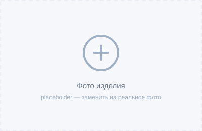

Поворот на заданный угол
Индексация и позиционирование оси по программе.
Подключаем четвёртую ось к вашей стойке без изменения управляющей программы: поворот, зубчатые колёса и резьба — штатными средствами ЧПУ.

Что умеет ТФО-160 в вашем сценарии работы.
Индексация и позиционирование оси по программе.
Модульная обработка шестерён прямо на вашем станке.
Резьба без передачи параметров стойке.
Совместимые стойки: Fanuc, Siemens, GSK, Mazak, Okuma, Haas. Выбор метода зависит от модели станка — подскажем на этапе заявки.

Шестерни на станке с ЧПУ без специализированной стойки.
4-я ось как штатная координата: разворот детали, осевое сверление.
Подключение через импульсные драйверы, работа в существующей КД.
Поставьте приводы на оси X и Z — получите нарезание резьбы, зубчатых колёс, проточку, расточку и шлицевые пазы. Добавьте модули к комплектации: